- Объект: офис-коворкинг
- Площадь: 85,8 кв.м
- Город: Алматы
- Статус: завершен, 2020 г.
- Комплектация проекта: Yurta Interiors
- Столярные изделия по нашим эскизам: Fabrica Loft
- Светильник и логотип по нашим эскизам: Даниил Марьин
- Фото: Алина Бахаутдинова
Проект офисного пространства с функцией коворкинга
К нам обратилась компания с просьбой организовать небольшой городской офис, для встреч с партнерами и возможностью для работы небольшого количества сотрудников. Задачей было сделать уютное, презентабельное пространство, с возможностью проводить встречи и презентации.
Помещение офиса изначально было выполнено в чистовой отделке.
Наша задача: обыграть пространство не внося координальных изменений.
Мы сделали циклевание паркета, покрыли его другим лаком, чтобы оттенок получился более натуральный, а также выкрасили стены и заменили электрику. После этого помещение было готово для наполнения мебелью и аксессуарами.
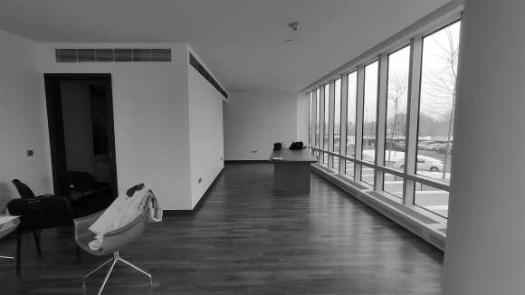
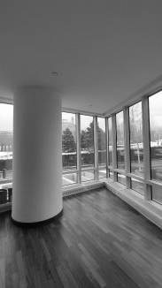
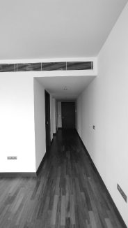
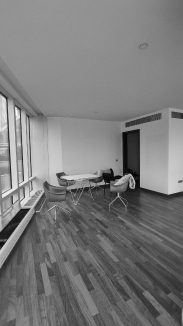
Эскизы
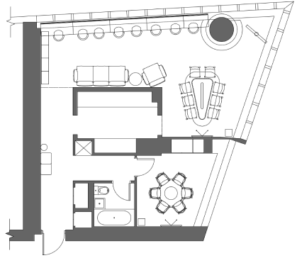
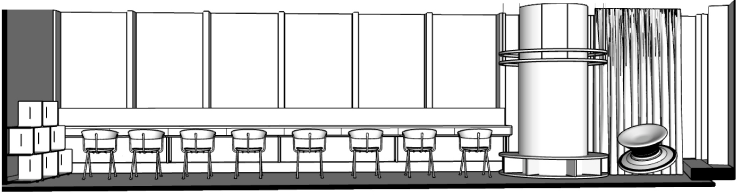
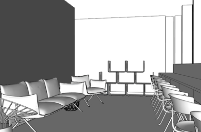
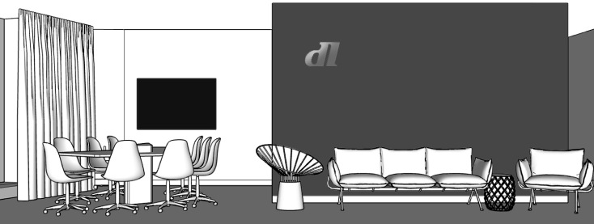
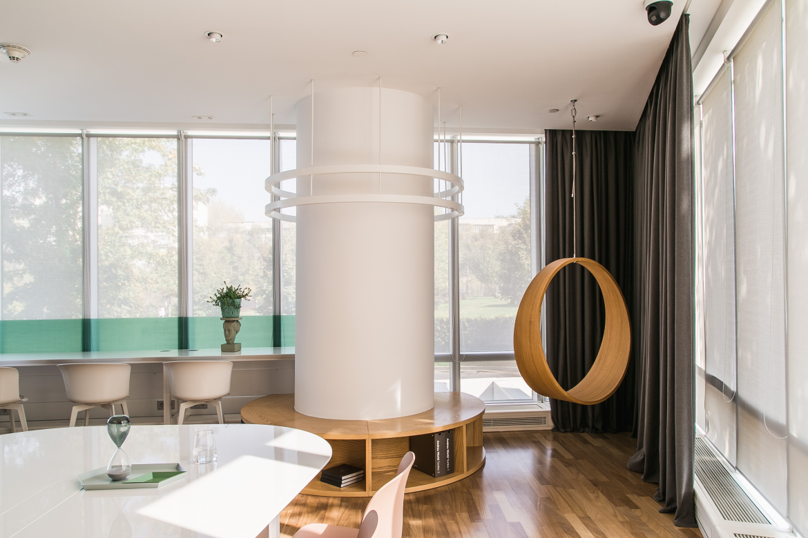
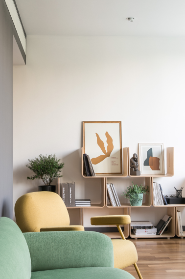
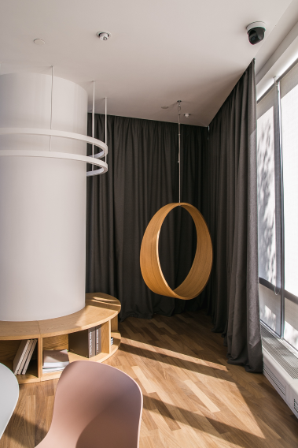
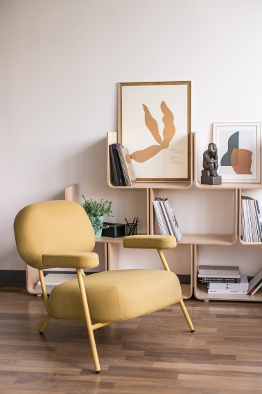
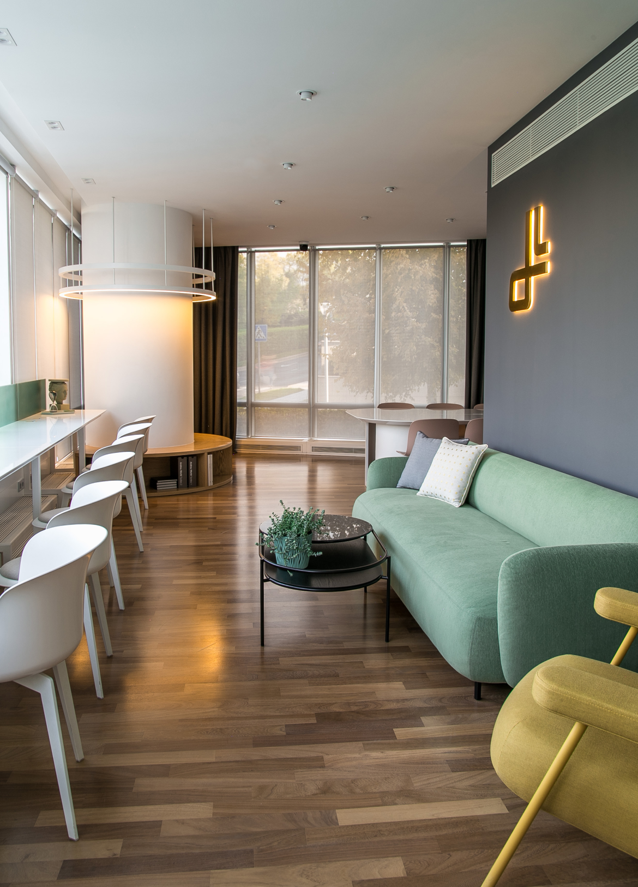
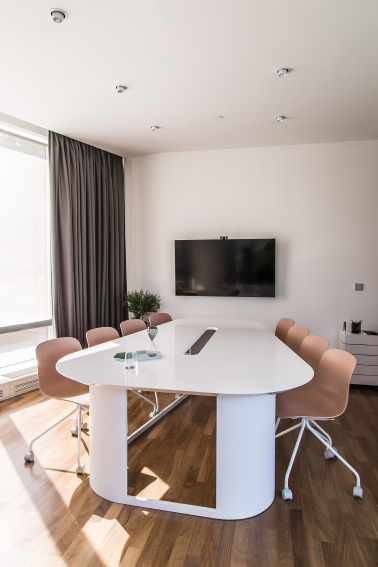
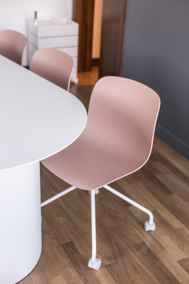
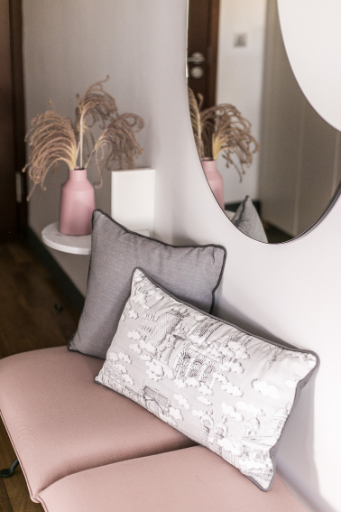
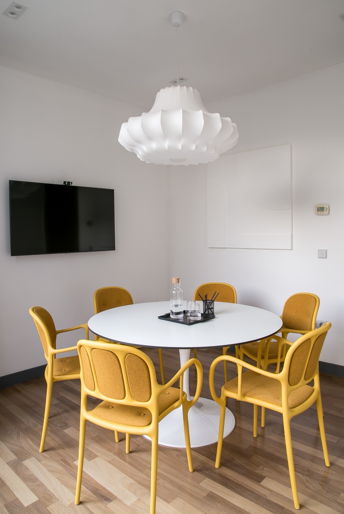
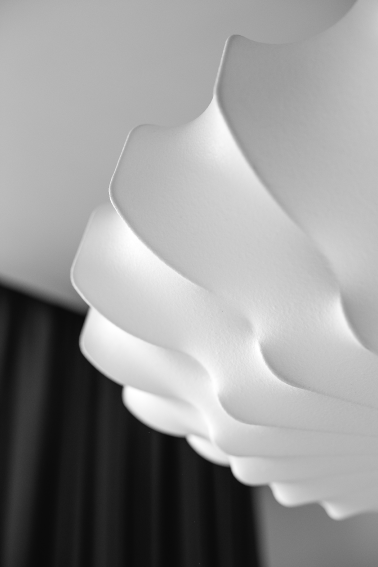
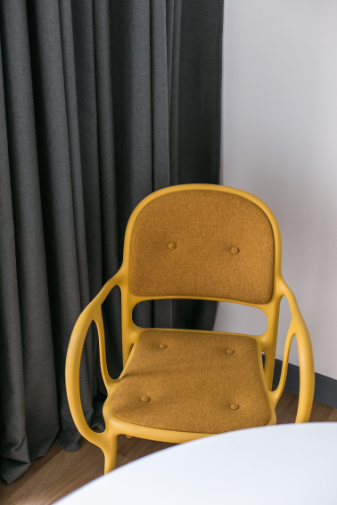